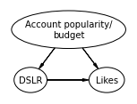

%matplotlib inline
import daft
import matplotlib.pyplot as plt
---------------------------------------------------------------------------
ModuleNotFoundError Traceback (most recent call last)
<ipython-input-1-e73a92bc9fa1> in <module>
1 get_ipython().run_line_magic('matplotlib', 'inline')
2
----> 3 import daft
4 import matplotlib.pyplot as plt
ModuleNotFoundError: No module named 'daft'
import matplotlib.pyplot as plt
pgm = daft.PGM()
### Line graph
pgm.add_node("s", r"Sunburn", 0, 0, aspect=1.9)
pgm.add_node("i", r"Ice cream", 1.5, 0, aspect=2.3)
pgm.add_node("w", r"Sun", 0.75, 1, aspect=1.2)
pgm.add_edge("w", "i")
pgm.add_edge("w", "s")
pgm.render()
#plt.gca().set_xlabel('(e)')
plt.tight_layout()
pgm.figure.savefig("sunburn_icecream_.png")
//anaconda3/lib/python3.7/site-packages/ipykernel_launcher.py:14: UserWarning: This figure includes Axes that are not compatible with tight_layout, so results might be incorrect.
import matplotlib.pyplot as plt
pgm = daft.PGM()
### Line graph
pgm.add_node("account", "Account popularity/\nbudget", 0.75, 1, aspect=3.0, scale=1.5)
pgm.add_node("dslr", r"DSLR", 0, 0, aspect=1.3)
pgm.add_node("likes", r"Likes", 1.5, 0, aspect=1.4)
pgm.add_edge("account", "dslr")
pgm.add_edge("account", "likes")
pgm.add_edge("dslr", "likes")
pgm.render()
#plt.gca().set_xlabel('(e)')
#plt.tight_layout()
pgm.figure.savefig("instagram_.png")

import matplotlib.pyplot as plt
#pgm = daft.PGM(node_ec=None)
pgm = daft.PGM()
### Line graph
pgm.add_node("mozz", r"Mozzarella", 0, 0, aspect=2.25)
pgm.add_node("phd", r"Civil eng. PhDs", 1.75, 0, aspect=3.0)
pgm.render()
#plt.gca().set_xlabel('(e)')
#plt.tight_layout()
pgm.figure.savefig("spurious.png")
import matplotlib.pyplot as plt
pgm = daft.PGM()
### Line graph
pgm.add_node("rating", r"Rating", 1.5, 0, aspect=1.9)
pgm.add_node("restaurant", r"Restaurant", 0, 0, aspect=2.5)
pgm.add_node("year", r"Year", 0.75, 1, aspect=1.2)
pgm.add_edge("year", "rating")
pgm.add_edge("year", "restaurant")
pgm.add_edge("restaurant", "rating")
pgm.render()
#plt.gca().set_xlabel('(e)')
plt.tight_layout()
pgm.figure.savefig("restaurant.png")
//anaconda3/lib/python3.7/site-packages/ipykernel_launcher.py:16: UserWarning: This figure includes Axes that are not compatible with tight_layout, so results might be incorrect.
app.launch_new_instance()
import numpy as np
import pandas as pd
import random
import itertools
def make_simpson_df_and_science_table(
treatments, outcomes, confounds, counts, treatment_name, outcome_name, confound_name
):
agg_rows = []
sample_rows = []
def other(t):
return list(set(treatments) - {t})[0]
for ((it, t), (io, o), (ic, c)) in itertools.product(
*(enumerate(l) for l in (treatments, outcomes, confounds))
):
n = counts[it, io, ic]
row = {
treatment_name: t,
outcome_name: o,
confound_name: c,
'count': n
}
agg_rows.append(row)
sample_row = {
#f"{outcome_name} for {treatment_name}={t}": io,
#f"{outcome_name} for {treatment_name}={other(t)}": np.nan,
f"{outcome_name} for {t}": io,
f"{outcome_name} for {other(t)}": np.nan,
confound_name: c
}
sample_rows.extend([sample_row] * n)
random.shuffle(sample_rows)
return (pd.DataFrame(agg_rows), pd.DataFrame(sample_rows))
food, food_sci = make_simpson_df_and_science_table(
["A", "B"],
["👎", "👍"],
["2019", "2020"],
np.array([
[[0, 80], [20, 100]],
[[10, 10], [70, 10]],
]),
"Restaurant", "Dish rating", "Year",
)
food.to_csv('restaurants.csv', index=False)
food_sci.to_csv('restaurants_counterfactuals.csv', index=False)
# Suppose we are trying to measure whether a certain pesticide is effective at killing insects that eat crops. We conduct a randomized controlled trial, and obtain the following data:
crops = make_simpson_df(
["Pesticide", "Control"],
["No insects", "insects"],
["Dead", "Alive"],
np.array([
[[0, 80], [20, 100]],
[[10, 10], [70, 10]],
]),
"Crop treatment", "", "Year",
)
food.to_csv('restaurants.csv', index=False)